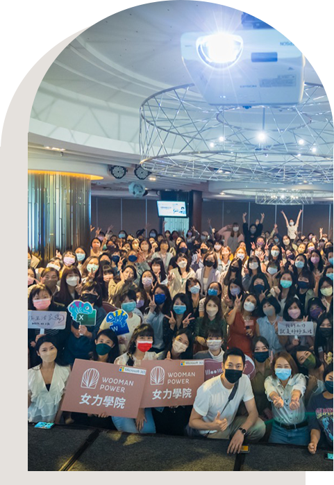
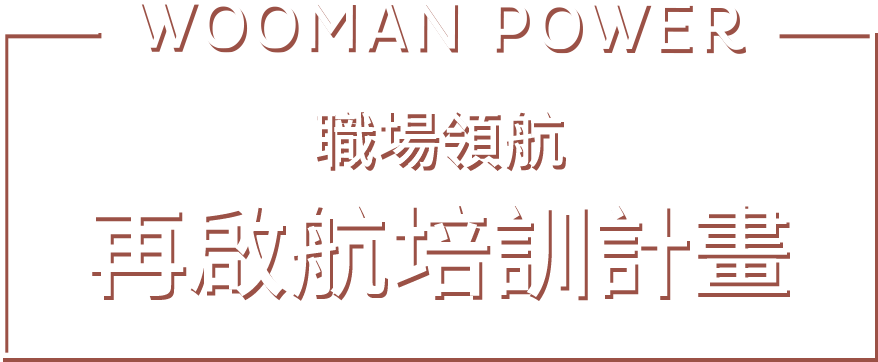

整個培訓課程為
免費課程
整個培訓課程為免費課程
目的在幫助學員重新進入職場，並成功面試取得工作機會。
每堂課的內容將由相應的主題導師，
並且透過案例分析、小組討論、角色扮演和實踐任務等互動活動，
來加強學習效果。
工作坊則提供學員們更深入的主題探討和實踐機會。
希望這個課程能夠為學員們成功重返職場提供實用的知識和技能。
課程時程
每週二
13:30 - 16:30
每場為三小時
13:30 - 16:30
每場為三小時
每個月
兩場課程+一場工作坊
為期三個月，共九堂課程
兩場課程+一場工作坊
為期三個月，共九堂課程
每個月底
一次企業面試的機會，
共三次面試
一次企業面試的機會，
共三次面試
時間
課程內容
預計授課講師
8/1
職業規劃與目標設定
謝瑞珊 （女力學院創辦人）
8/8
穿著與職業形象建立
劉為麟（穿搭諮詢師）
8/15
建立撰寫和求職技巧
蘇盈如（國際獵人頭）
8/22
安排企業面試 / 企業HR 協助模擬面試
正式企業面試 / 企業HR 協助模擬面試
9/5
職場溝通與人際關係
白慧蘭（前微軟行銷資深協理）
9/12
自信心和壓力管理
張希慈（Soul Lab 靈魂試驗所執行長）
9/19
時間管理和效率提升
紫藤（代購女王）
9/26
安排企業面試 / 企業HR 協助模擬面試
正式企業面試 / 企業HR 協助模擬面試
10/3
職場面試技巧和策略
白慧蘭（前微軟行銷資深協理）
10/10
工作機會尋找和申請策略
蘇盈如（國際獵人頭）
10/17
面試實戰
謝瑞珊 （女力學院創辦人）
10/24
安排企業面試 / 企業HR 協助模擬面試
正式企業面試 / 企業HR 協助模擬面試
10/31
畢業典禮
課程內容
課程一
職業規劃與
目標設定
目標設定
謝瑞珊（女力學院創辦人）
課後作業：寫出自己的目標心智圖與接下來的三個月 call to action
- 了解每位學員的職業興趣和目標
- 提供工具和資源，幫助學員確定自己的職業方向
- 目標設定的方法和策略
課程二
穿著與職業
形象建立
形象建立
劉為麟（穿搭諮詢師）
課後作業：確定自己的面試穿搭與上班穿搭各一套
- 提供穿著建議和指導，適應不同行業和職位的職業裝扮要求
- 分享關於色彩搭配、服裝配件和整體形象的技巧和建議
- 進行實際案例分析和示範，讓學員了解如何通過穿著來營造專業和自信的形象
工作坊
簡歷撰寫
和求職技巧
和求職技巧
蘇盈如（國際獵人頭）
課後作業：寫出自己的履歷
- 教授簡歷撰寫的基本原則和技巧
- 提供實例和範本，幫助學員撰寫出吸引人的簡歷
- 分享有效的求職技巧和面試準備策略
課程三
職場溝通
與人際關係
與人際關係
白惠蘭（前微軟行銷資深協理）
課後作業：觀察身邊的溝通問題，並且將課程中的技巧使用在日常的生活中
- 教授有效的職場溝通技巧，包括口頭和書面溝通
- 探討建立和維護良好人際關係的方法
- 強調解決衝突和建立合作的能力
課程四
自信心
和壓力管理
和壓力管理
張希慈（靈魂實驗所執行長）
陳雪如
陳雪如
- 探討建立自信心的方法和技巧
- 提供壓力管理策略，幫助學員應對職場壓力
- 分享平衡工作和生活的建議和實踐
工作坊
時間管理
和效率提升
和效率提升
紫藤
課後作業：制定個人時間管理計劃，學員需要根據所學的時間管理技巧，制定一份個人時間管理計劃。
- 強調時間管理在職場中的重要性，學習如何合理安排工作時間和優化工作流程。
- 探討常見的時間管理挑戰，並介紹時間管理工具和技巧，如日程表、優先級設定、避免拖延等。
- 提供實際案例和練習，讓學員能夠應用時間管理策略解決個人工作中的問題。
課程五
職業面試技巧
和策略
和策略
白惠蘭（前微軟行銷資深協理）
- 教授面試前的準備工作，包括研究和答題技巧
- 模擬面試情境，提供實際的面試經驗
- 分析面試常見問題和如何回答
課程六
工作機會尋找
和申請策略
和申請策略
蘇盈如（國際獵人頭）
- 提供尋找工作機會的方法和渠道
- 教授撰寫求職信和申請表的技巧
- 分享如何有效利用職業網絡和資源
工作坊
面試實戰
謝瑞珊 （女力學院創辦人）
- 提供面試實戰經驗
- 模擬面試和反饋
- 分享成功面試的關鍵要素和技巧

感謝您對我們舉辦的活動感興趣，
本計畫對象為二度就業婦女，
以離開職場一年以上女性為主，
整個培訓課程為免費，
我們誠摯地邀請您填寫以下問卷，
以了解更多關於您的背景、技能和目標，
以便為您提供最適合的培訓內容和支持
本計畫對象為二度就業婦女，
以離開職場一年以上女性為主，
整個培訓課程為免費，
我們誠摯地邀請您填寫以下問卷，
以了解更多關於您的背景、技能和目標，
以便為您提供最適合的培訓內容和支持